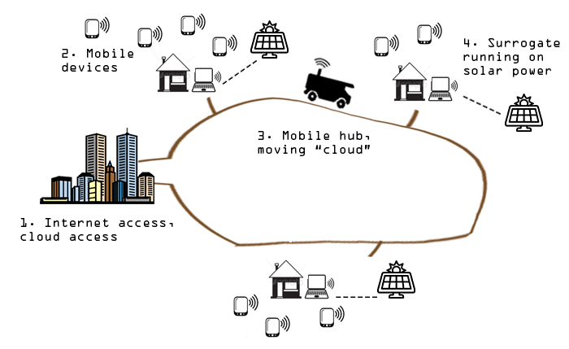
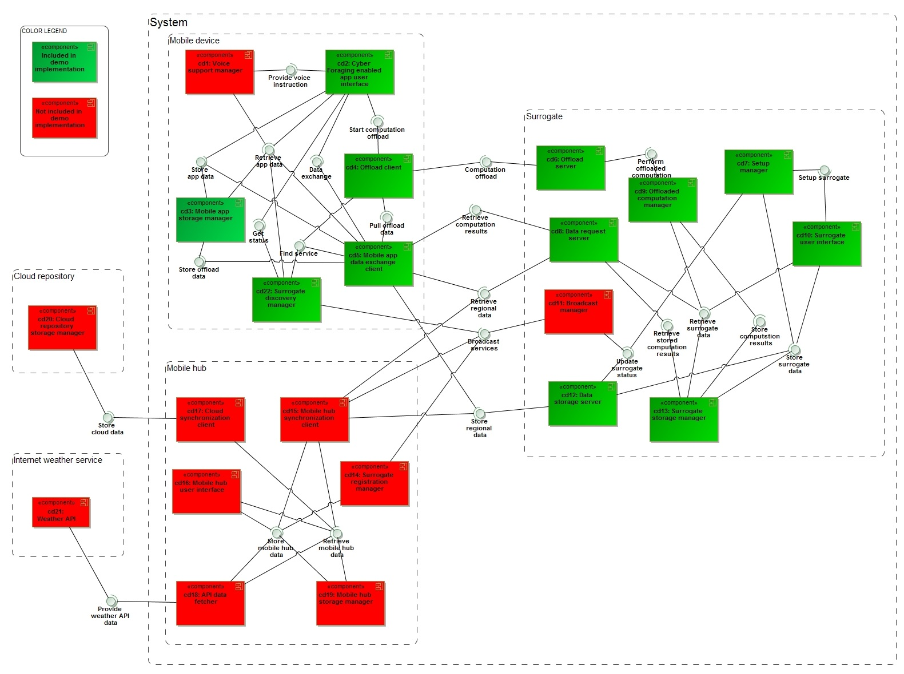
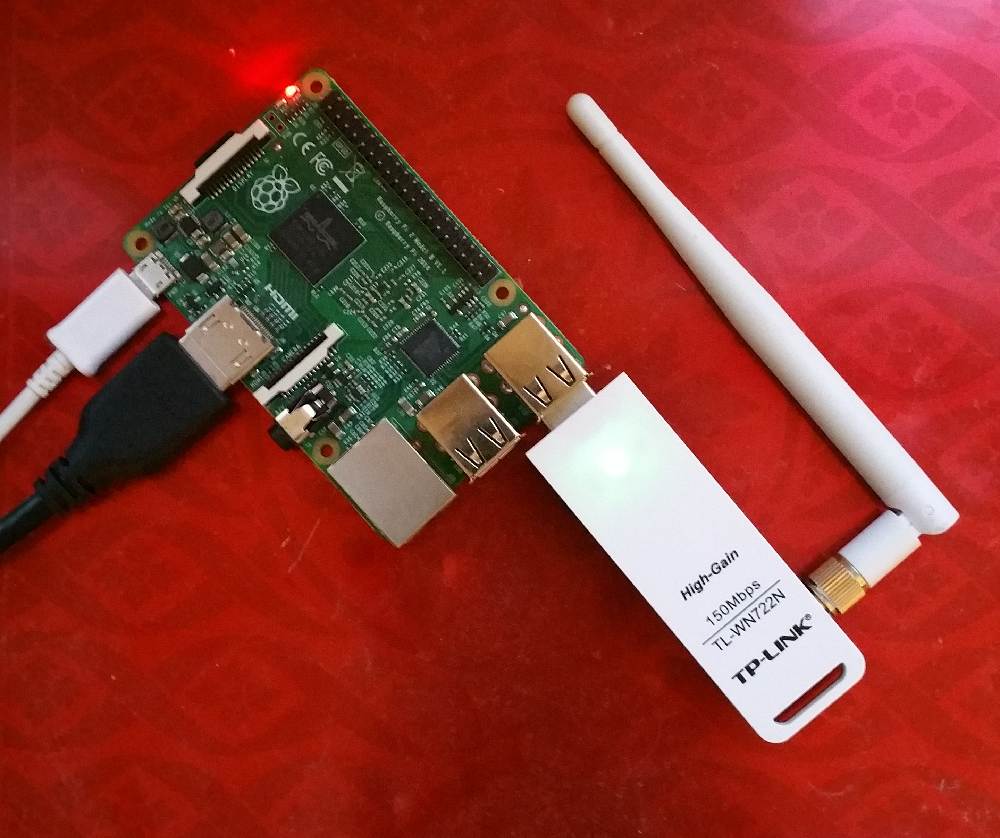

Weather information system
View the Project on GitHub reuelbrion/AgroTempus
Download the thesis document PDF file
The tactics paper External link
Get the surrogate Raspbian imagereuelbrion/AgroTempus application-image branch
This is the project page for AgroTempus, a demo implementation for an agricultural Cyber-Foraging system for use in resource-challenged environments. It is part of a master thesis project focusing on cyber-foraging tactics.
The tactics were taken from this paper.
The thesis document contains the full design and architecture document for the system.
The system is used to store and retrieve weather data, and perform operations on this data, in regions with low internet connectivity.
Eventually, interchanging of data with internet applications is realized through interaction with a moving hub.
A visualization is shown in the picture below.

The demo system was not implemented fully due to time constraints. The following component diagram shows an overview of the system components with the parts of the system that were implemented in green. 
There are two main components to the system, the Firefox OS app and the surrogate Java application, both are contained in the main project.
A working version of the surrogate is available as well, made for Raspberry Pi. This includes an OS image (Raspbian) with an auto-start script.
The surrogate image was tested on a Raspberry Pi 2 with a TP-Link TL-WN722N wireless adapter, and is available in this project branch.
The thesis document has more information on how to use the applications.
